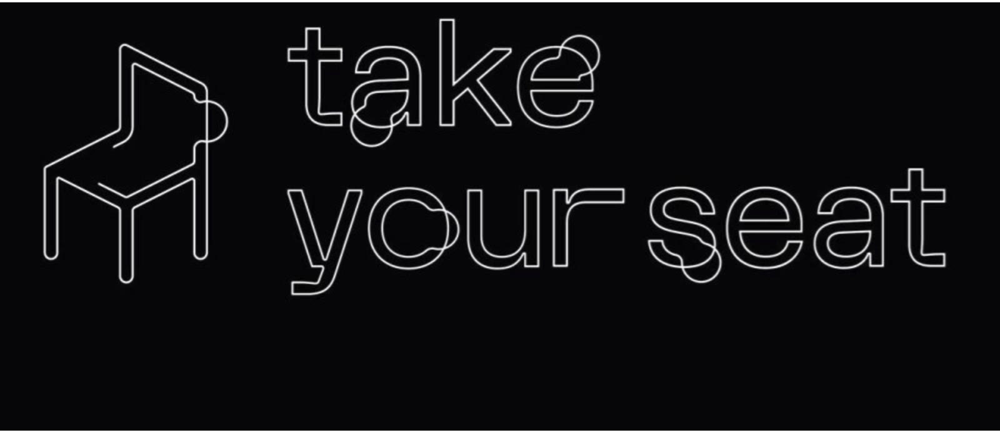

Four Seats
Le sedie raccontano memorie, suggeriscono azioni e aspettative, funzionano da motori di riflessione e stimolo per una miriade di attività, dal lavoro alla cucina, dall'ambiente domestico a quello all'aria aperta. Quattro sound designer interpretano altrettante tematiche legate all'«universo sedia», ricalcando i punti cardinali della mostra «Take Your Seat» allestita al Salone del Mobile, ma costruendo un ambiente sonoro immersivo specifico per la sala di ADI Design Museum. Quattro momenti musicali si alternano senza soluzione di continuità, da un lato stimolando acusticamente il visitatore, dall'altro marcando una geometria di spazi sonori in costante modulazione.
Distribuita nei quattro padiglioni del Supersalone (Rho Fiera, 5–10 settembre), la mostra è divisa in altrettante sezioni tematiche, con l'aggiunta di una sezione «extra» all'interno dell'ADI Design Museum, conclusione — o inizio — ideale del percorso.
